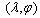
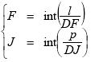
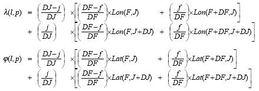
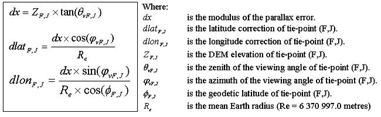
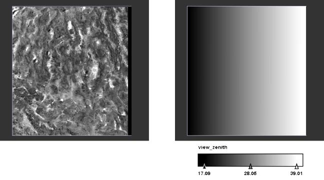
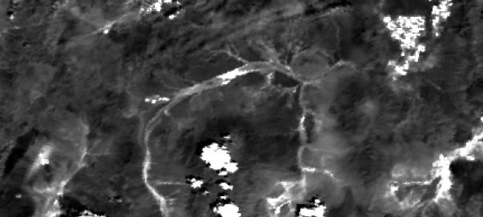

| Orthorectification Algorithm | |
Orthorectified images are geodetic corrected with respect to the acquisition conditions such as viewing geometry, platform attitude, Earth rotation and of the relief effects (parallax). Such corrected images are perfectly superimposable whatever being their acquisition dates and viewing direction. Normally, the geo-location of Level 1B and Level 2 data products is based on the intersection of viewing direction and the WGS-84 earth ellipsoid. The orthorectification algorithm in BEAM corrects the geo-location with respect to a specified elevation model with sufficient accuracy.
Equations and algorithms provided in this page are extracted from the "Envisat MERIS Geometry Handbook" written by
Serge RIAZANOFF, Director of VisioTerra and Professor at the University of Marne-la-Vallée (France).
For more information, please check www.visioterra.com and
http://www-igm.univ-mlv.fr/~riazano/ (folder "Publications").
The following figure demonstrates the preconditions which are expected by the orthorectification as implemented in BEAM:

Preconditions for orthorectification
The geodetic point P0 is the geo-location as provided by a Level 1B or Level 2 data product. The geodetic
point P1 is the actual position of the measurement. The orthorectification is actually a map projection
in
which each pixel in the output product clearly identifies P1. A simple map projection tries to find
find the pixel corresponding to P0 in a given input product. The orthorectification tries to find the
pixel corresponding to P1 in a given input product.
The approximation of the Earth geoid as used in the orthorectification algorithm can be provided by MERIS/AATSR
tie-point
elevations or a supported DEM. Currently, only the GETASSE30 elevation
model
can be used.
The prediction/correction algorithm ensures that both, the direct location model and the inverse location model have the same accuracy.
In most of the cases the direct location model is issued from a viewing model given by analytical functions and providing accurate results, while the inverse location model is only a predictor, for example estimated by a polynomial function.
Scope of the prediction/correction algorithm is to retrieve the pixel (l,p)
that match the 
by the direct location model: f(l,p) = .
Principle is to sum a series of always-smaller corrections vectors, each one being estimated by a go and
return from/to the MERIS segment to/from the geocoded image. The refinement loop is stopped when the
(li,pi) is close enough the first point (l0,p0) according to a
predefined tolerance.
Following figure illustrates the prediction/correction principle on two iterations.


The direct location f compute the geodetic coordinates (l,j) from the MERIS
segment coordinates (l,p) and the altitude h. The provided geodetic coordinates
are corrected of the parallax bias taking into account the viewing angle  and the altitude h.
and the altitude h.
Coordinates (F,J) of the upper-left tie-point of the facet containing the point (l,p) may simply be obtained dividing l and p by the number DF of frames between two consecutive tie-points and the number DJ of columns between tie-points respectively.


The standard bi-linear interpolation is applied to the longitude and latitude of the tie-points.

The standard bi-linear interpolation is applied to the viewing zenith and viewing azimuth of the tie-points.

The geodetic correction formula applied to the tie-points are applied to the (l,p) point.

The parallax is estimated by knowing the altitude and viewing angle at any point of the product grid. In particular, the geodetic correction terms (dlat,dlon) are said being computed by the formula below and stored in the Tie Points ADSR.

The drawing below demonstrates the parallax estimation graphically:
To demonstrate the orthorectification two subsets from two products showing the same scene but from different viewing angles were taken and laid over each other.


At a zoom ratio of 200% you can see the differences between both scenes. The unorthorectified scenes are heavily blurred but the orthorectified ones are clear.

